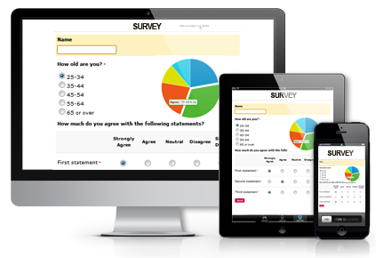
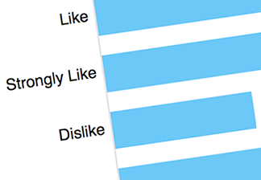

|
Upcoming Technology
The upcoming technology in the public sector is the ability for them to communicate with the citizens of the country through mobile devices.
A survey was conducted which revealed that in some cities they are using social media and online surveys to interact with their citizens.
In Avondale, Arizona, they engage citizens through a mobile app and online forum which gets ideas from citizens and which they can vote up or down.
In Westminister Colorado, a similar forum allows for citizens to vote about communnity ideas and gives rewards to users who engage with the online forum on a regular basis.
These cities are promoting more engagement activities which is combats the decline in government trust from the public.


|